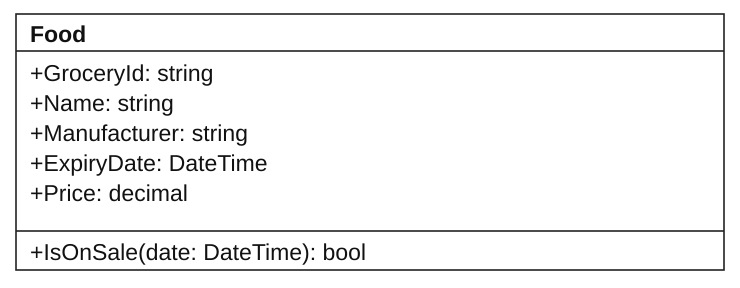
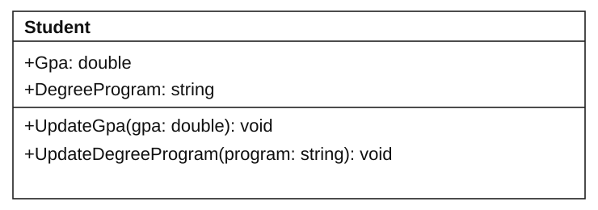
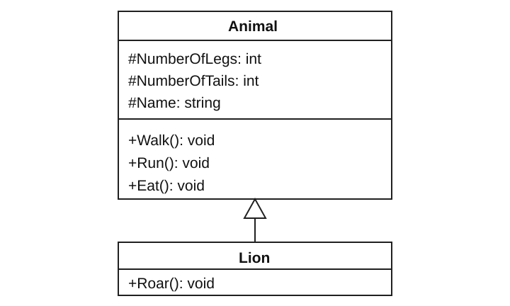

UML, узагальнення та приховування інформації
Навіщо потрібні діаграми класів
Під час розробки програмного забезпечення спочатку створюють концептуальний проєкт, а потім переходять до технічного проєктування.
Для обговорення загальної будови системи можна застосовувати CRC-картки (Class, Responsibility, Collaborator). Вони дозволяють описувати класи, їхні відповідальності та взаємодію без необхідності одразу писати код.
Для технічного проєктування потрібне докладніше представлення структури програми. Одним із таких засобів є UML-діаграма класів (UML class diagram).
Діаграми класів містять більше інформації, ніж CRC-картки. Вони допомагають показати будову класів і полегшують перехід від проєкту до програмної реалізації.
Від абстракції до діаграми класів
Абстракція дозволяє спростити поняття до його суттєвих характеристик у певному контексті. В об’єктно-орієнтованій програмі ці характеристики можна визначити в класі.
Розглянемо продукт у продуктовому магазині. У CRC-картці класу Food можна зазначити відповідальності:
- знати ідентифікатор продукту;
- знати назву;
- знати виробника;
- знати термін придатності;
- знати ціну;
- визначати, чи продається продукт зі знижкою.
CRC-картка описує їх разом. Але під час створення класу слід розрізняти дані (характеристики продукту) і методи (дії, які він виконує).
UML-діаграма класу

Клас Food: публічні властивості та метод IsOnSale.
На діаграмі клас зображують прямокутником із трьома секціями:
- Назва класу.
- Атрибути або властивості.
- Операції (методи).
Запис атрибута має вигляд:
Наприклад, Price: decimal означає властивість Price типу decimal. Знак + позначає публічний доступ.
Для операції використовують форму:
Наприклад, IsOnSale(date: DateTime): bool описує метод, що приймає дату й повертає логічне значення true або false.
У C# назви класів, властивостей і методів зазвичай записують у стилі PascalCase, а параметри — у стилі camelCase. Для ціни використано тип decimal, який підходить для грошових обчислень. Тому при адаптації використано GroceryId, ExpiryDate та IsOnSale замість іншого написання ідентифікаторів.
Перехід від UML до C
У C# характеристики об’єкта часто представляють властивостями (properties), а не публічними полями. Це дозволяє визначити доступ до читання й зміни даних.
public class Food
{
public string GroceryId { get; set; } = string.Empty;
public string Name { get; set; } = string.Empty;
public string Manufacturer { get; set; } = string.Empty;
public DateTime ExpiryDate { get; set; }
public decimal Price { get; set; }
public bool IsOnSale(DateTime date)
{
throw new NotImplementedException();
}
}
Метод IsOnSale показано лише як частину структури класу: умови надання знижки в цій моделі ще не визначено, тому його логіку не реалізовано. Це не готовий клас магазину.
Назва класу з діаграми стає назвою класу C#, характеристики — властивостями, а операції — методами. Можливе й зворотне перетворення: за програмним кодом можна побудувати UML-діаграму.
Як UML показує інкапсуляцію
Інкапсуляція об’єднує дані та поведінку в одному класі й дозволяє визначати, які його члени доступні ззовні. На UML-діаграмах для цього використовують позначення:
| Позначення | Значення у C# |
|---|---|
+ |
public — відкритий доступ |
- |
private — доступ лише всередині типу |
# |
protected — доступ усередині типу та його похідних класів |
Приклад: клас Student

Властивості Gpa і DegreeProgram та методи зміни їхніх значень.
У C# для отримання й зміни характеристик зазвичай використовують властивості з аксесорами get та set:
getповертає значення властивості;setзмінює його значення.
Замість окремих методів GetGpa() і SetGpa(...) можна оголосити одну властивість Gpa.
Розглянемо клас:
public class Student
{
public double Gpa { get; private set; }
public string DegreeProgram { get; private set; } = string.Empty;
public void UpdateGpa(double gpa)
{
Gpa = gpa;
}
public void UpdateDegreeProgram(string program)
{
DegreeProgram = program;
}
}
Із зовнішнього коду дозволено прочитати student.Gpa, але не можна безпосередньо виконати student.Gpa = 3.5, оскільки аксесор set позначено як private.
Змінити значення можна через відкритий метод UpdateGpa(...). У цьому спрощеному прикладі метод лише присвоює значення. Якщо особливих правил зміни немає, окремий метод може бути зайвим, і достатньо звичайної автоматичної властивості з публічним set.
Таким чином, у C# не потрібно створювати окремі методи читання та запису для кожного атрибута: стандартний механізм доступу до даних — властивості.
UML-діаграма показує публічну властивість. Деталь
private setуточнюється в C#-коді; якщо це важливо для моделі, її можна додатково зазначити в обмеженнях до діаграми.
Узагальнення
Узагальнення (generalization) — четвертий основний принцип об’єктно-орієнтованого проєктування.
Він дозволяє виділяти спільні характеристики та поведінку кількох класів в один загальніший клас, щоб не дублювати однаковий код.
У звичайному програмуванні повторно застосовувати певну поведінку можна за допомогою методу, який працює з різними вхідними даними.
В об’єктно-орієнтованому підході узагальнення можна реалізувати також через успадкування (inheritance).
У C# розрізняють:
- Базовий клас (base class) — загальніший клас зі спільними характеристиками та поведінкою.
- Похідний клас (derived class) — спеціалізований клас, що успадковує доступні члени базового класу.
Підклас успадковує атрибути й поведінку суперкласу. Він також може мати власні додаткові характеристики та операції.
Кілька підкласів можуть успадковувати спільні члени від одного суперкласу. Якщо спільну реалізацію потрібно змінити, часто достатньо зробити це один раз у суперкласі.
Завдяки цьому зменшується повторення коду, а систему стає простіше розширювати й супроводжувати.
Приклад: Animal і Lion

Діаграма узагальнення: Lion успадковує члени класу Animal.
Клас Animal — суперклас, а клас Lion — його підклас.
У UML успадкування зображують суцільною лінією з порожнім трикутником, який спрямований до суперкласу. Зазвичай загальний клас розміщують вище, а спеціалізований — нижче.
На діаграмі базовий клас Animal містить захищені властивості:
#NumberOfLegs: int;#NumberOfTails: int;#Name: string.
А також публічні операції:
+Walk(): void;+Run(): void;+Eat(): void.
Похідний клас Lion додає власну операцію +Roar(): void.
Успадковані члени не потрібно повторно записувати в прямокутнику похідного класу. Порожній трикутник на лінії узагальнення спрямований до базового класу.
Успадкування у C
У C# успадкування записують через двокрапку :, а виклик конструктора базового класу — через base(...).
public abstract class Animal
{
protected int NumberOfLegs { get; }
protected int NumberOfTails { get; }
protected string Name { get; }
protected Animal(string name, int legs, int tails)
{
Name = name;
NumberOfLegs = legs;
NumberOfTails = tails;
}
public virtual void Walk()
{
Console.WriteLine("Animal is walking");
}
public void Run() { }
public void Eat() { }
}
public class Lion : Animal
{
public Lion(string name, int legs, int tails)
: base(name, legs, tails)
{
}
public override void Walk()
{
Console.WriteLine("I'd rather nap");
}
public void Roar() { }
}
У прикладі Animal позначено як abstract, тому створити об’єкт безпосередньо через new Animal(...) не можна. Натомість можна створити екземпляр похідного класу Lion.
Конструктор Lion викликає конструктор Animal через base(name, legs, tails), щоб ініціалізувати успадковану частину об’єкта. Порожні методи Run, Eat і Roar лише позначають операції моделі — їхню поведінку тут не деталізують.
Перевизначення поведінки
У C# похідний клас може перевизначити реалізацію успадкованого методу, якщо метод базового класу позначений як virtual або abstract. У похідному класі при цьому використовують override.
У наведеному прикладі метод Walk() базового класу повідомляє, що тварина йде, а перевизначена версія Lion.Walk() — що лев волів би поспати.
Отже, успадкування дозволяє використовувати спільну поведінку й спеціалізувати її там, де це потрібно.
Приховування інформації
Приховування інформації (information hiding) — важливий принцип організації програмних компонентів.
Не кожна частина системи повинна знати все про інші частини. Модуль має отримувати лише ту інформацію, яка потрібна йому для виконання власного завдання. Решту деталей варто приховувати.
Приховування інформації часто пов’язують із захистом конфіденційних даних. Проте в проєктуванні програм воно має також інше значення: приховувати деталі, які можуть змінюватися, зокрема алгоритми та способи представлення даних.
Натомість припущення та правила використання модуля, від яких залежать інші компоненти, мають бути відображені через API або інтерфейс.
Чому це важливо
Уявімо, що два розробники працюють над різними модулями.
Якщо кожен модуль можна використовувати через визначений інтерфейс, одному розробнику не потрібно знати всі внутрішні деталі реалізації іншого модуля.
Таким чином різні частини системи можна розробляти та змінювати більш незалежно.
Загальний принцип:
- Приховувати те, що може змінитися: алгоритми, внутрішню реалізацію, представлення даних.
- Відкривати те, на що покладаються інші компоненти: доступний інтерфейс і очікувану поведінку.
Зв’язок приховування інформації з інкапсуляцією
Інкапсуляція об’єднує атрибути й поведінку в класі та визначає, до яких із них дозволено звертатися ззовні.
Завдяки інкапсуляції інші класи використовують сигнатури доступних методів і очікувану поведінку, не знаючи внутрішньої реалізації цих методів.
Тому реалізацію можна змінювати, не змінюючи результату, на який розраховують користувачі класу.
Так само можна приховати атрибути. Якщо значення певного атрибута критично важливе для роботи класу, зовнішнім компонентам не варто дозволяти змінювати його безпосередньо.
Модифікатори доступу у C
Для обмеження доступу до полів, властивостей і методів C# використовує модифікатори доступу.
| Модифікатор | Доступ |
|---|---|
public |
Із будь-якого коду, для якого доступний сам тип |
private |
Усередині типу, який оголосив член |
protected |
Усередині типу та його похідних класів |
internal |
У межах тієї самої збірки (assembly) |
protected internal |
Із тієї самої збірки або з похідних класів в інших збірках |
private protected |
Із самого типу та похідних класів у тій самій збірці |
public дозволяє використовувати доступний член з інших типів. Однак виклик публічного методу не розкриває його внутрішнього алгоритму.
private приховує член від зовнішнього коду. Це корисно для внутрішніх деталей, які не повинні ставати частиною публічного інтерфейсу.
protected дозволяє похідним класам використовувати відповідні члени базового класу.
internal обмежує доступ межами збірки .NET, а не простору імен.
Якщо в C# не вказати модифікатор доступу для поля чи методу класу, за замовчуванням він матиме доступ private. Для звичайного класу, оголошеного безпосередньо в просторі імен, доступ за замовчуванням — internal.
Приклад класу Person
public class Person
{
private string _name;
public Person(string name)
{
_name = name;
}
public string Name => _name;
}
Поле _name приховане модифікатором private, а властивість Name дозволяє читати його значення. У такій простій моделі той самий результат можна отримати коротше за допомогою автоматичної властивості:
public class Person
{
public string Name { get; private set; }
public Person(string name)
{
Name = name;
}
}
Зовнішній код може прочитати Name, але не може змінити її через set, бо доступ до аксесора обмежено.
Приховування інформації означає, що користувачам класу відомий його доступний інтерфейс, але їм не потрібно залежати від способу зберігання даних усередині об’єкта.